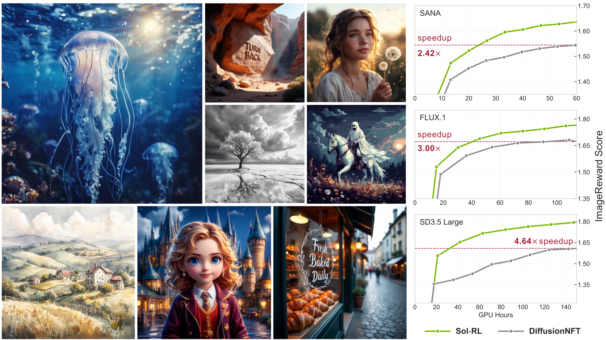
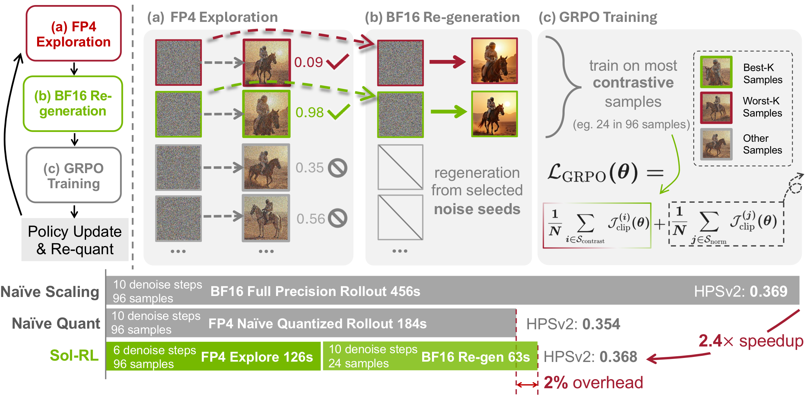
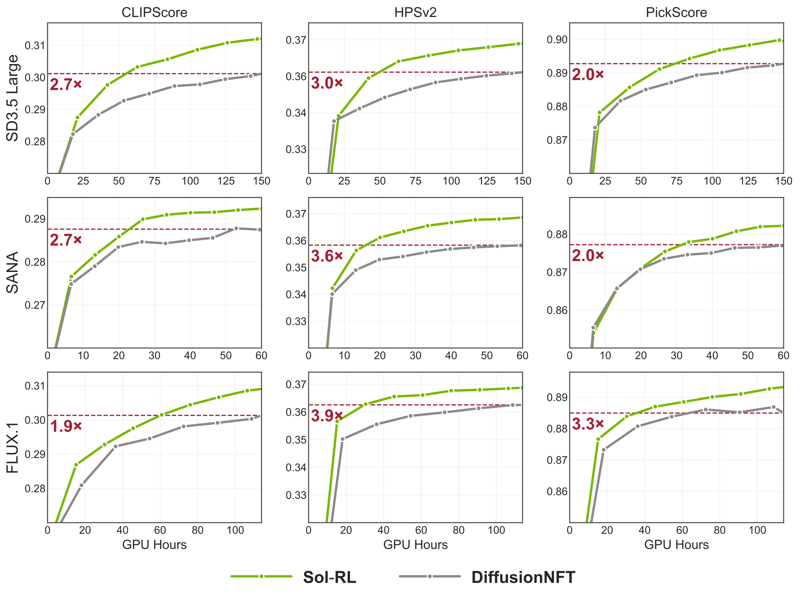

Demo Video
About
Reinforcement-Learning-based post-training has recently emerged as a promising paradigm for aligning text-to-image diffusion models with human preferences. While increasing the rollout group size yields significant performance improvements, scaling rollout on large-scale foundational diffusion models (e.g., FLUX.1) imposes a prohibitive computational burden. Furthermore, naively accelerating the pipeline via quantized rollout introduces risks of performance degradation. To break this dilemma, we propose Sol-RL, a novel FP4-empowered Two-Stage RL framework. By decoupling rollout for exploration and policy optimization, our method accelerates the rollout phase via FP4 quantization while reserving high-precision samples for optimization. Our framework is both efficient and near-lossless, maintaining the training fidelity of the full-precision rollout pipeline while fully exploiting the throughput gains enabled by NVFP4. Extensive experiments across SANA, FLUX.1 and SD3.5-L substantiate that our two-stage approach delivers superior alignment performance while accelerating end-to-end training by up to 4.64×.

Sol-RL enables efficient and high-fidelity text-to-image alignment.
Qualitative Results
All methods side by side. Click any image to view fullscreen.
Core Design: Decoupled Two-Stage Pipeline
We separate the high-throughput FP4 exploration from the selective BF16 high-contrastive rollout. This framework achieves up to 4× acceleration compared to naive scaling while avoiding quantization-induced corruption, introducing merely a 2% computational overhead.

Methodology
Although expanding the pool of exploratory rollouts yields substantial performance gains, it creates a bottleneck in the RL pipeline with heavy inference costs. Naive application of acceleration techniques such as low-bit quantization often compromises visual integrity and destabilizes optimization. Sol-RL introduces a decoupled two-stage architecture that leverages FP4 quantization exclusively for high-throughput exploration while preserving high-fidelity rollout for policy optimization.
Rollout Scaling: Promise and Bottleneck
Larger rollout groups broaden exploration and yield better candidate samples. Under a selective training paradigm, only the most contrastive samples (best-K and worst-K) are used for gradient updates, providing more reliable and informative learning signals while keeping training overhead unchanged. This enables faster convergence and superior alignment performance.
However, aggressive rollout scaling shifts the computational bottleneck from policy optimization to candidate generation. Under selective training, only a small contrastive fraction is retained while the vast majority of generated trajectories are discarded — revealing massive algorithmic redundancy in computing the full pool at high precision.
Key Insight: Proxy Reward Ranking via FP4
Under the deterministic nature of ODE-style diffusion sampling, the coarse semantic layout and structural outcome of a generated rollout are fundamentally dictated by its initial noise seed. NVFP4 inference naturally preserves this semantic structure despite localized pixel-level deviations, enabling high-throughput rollouts to rapidly estimate approximate reward magnitudes.
This means FP4 rollouts serve as reliable proxies for intra-group reward ranking — we can use low-precision forward passes solely to evaluate and rank candidates, then regenerate only the most informative seeds in full BF16 precision. Empirical analysis confirms heavy concentration of probability density along the rank diagonal, particularly within the Top-K and Bottom-K quadrants essential for policy optimization.
Two-Stage Pipeline
- Stage 1: Accelerated Exploration at Scale via FP4 — Sample N=96 independent initial noises and generate candidates through the NVFP4-quantized ODE solver with reduced inference steps (6 steps) to rapidly compute proxy rewards. NVFP4 dense operations deliver up to 4× the TFLOPs of standard BF16 arithmetic, unlocking extreme throughput. The proxy rankings are used to filter the massive pool and isolate a minimal subset of K high-contrastive seeds (top and bottom candidates).
- Stage 2: High-Fidelity Regeneration and Policy Update — The selected K=24 seeds are regenerated in the original BF16 diffusion loop with the full step budget (10 steps). By completely shielding the vector field from low-precision quantization, the ODE solver reliably reconstructs high-fidelity samples. The policy then performs standard gradient-based optimization exclusively on these high-fidelity contrastive samples. After the update, weights are re-quantized into NVFP4 with negligible overhead and synchronized to the inference model for the next iteration.
In summary, Sol-RL elegantly resolves the dilemma between training integrity and efficiency. It harnesses the extreme TFLOPs of FP4 to efficiently explore a massive candidate pool and identify its most contrastive samples, while reserving expensive high-precision compute strictly for the K samples that actually dictate the policy update — introducing merely ~2% computational overhead relative to the accelerated exploration phase.
Overall Performance
Main Results on FLUX.1
| Method | ImageReward | CLIPScore | PickScore | HPSv2 |
|---|---|---|---|---|
| DanceGRPO | 1.2351 | 0.2769 | 0.8807 | 0.3349 |
| FlowGRPO | 1.5331 | 0.2884 | 0.8743 | 0.3501 |
| AWM | 1.6757 | 0.3039 | 0.8842 | 0.3664 |
| DiffusionNFT | 1.6707 | 0.2991 | 0.8852 | 0.3613 |
| Sol-RL (Ours) | 1.7636 | 0.3089 | 0.8932 | 0.3688 |

Learning curves across metrics and models.
Efficiency Comparison (seconds/iteration)
| Base Model | Rollout Naive | Rollout Ours | Speedup | E2E Naive | E2E Ours | Speedup |
|---|---|---|---|---|---|---|
| FLUX.1 | 184 | 79 | 2.33× | 274 | 169 | 1.62× |
| SD3.5-Large | 451 | 187 | 2.41× | 691 | 427 | 1.61× |
| SANA | 65 | 46 | 1.41× | 95 | 76 | 1.25× |